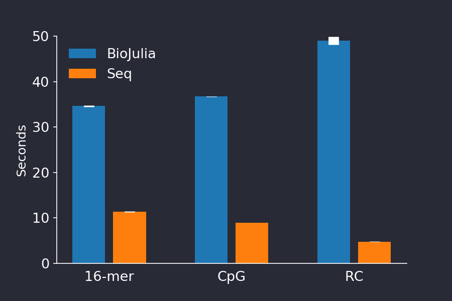
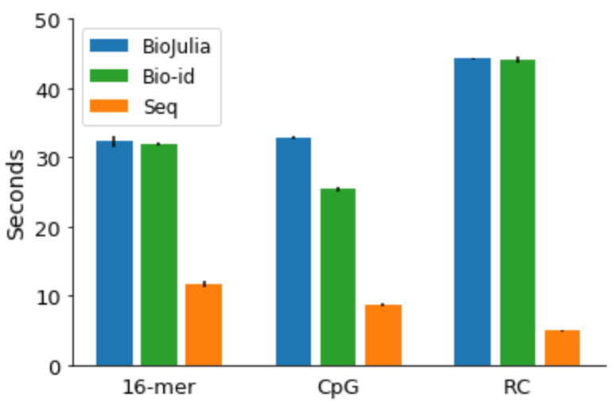
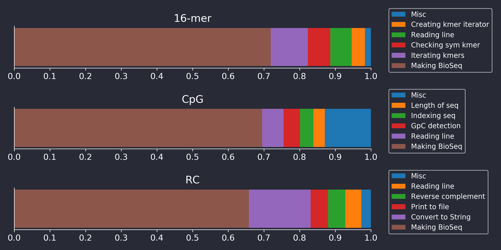
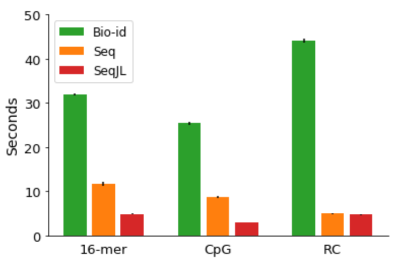
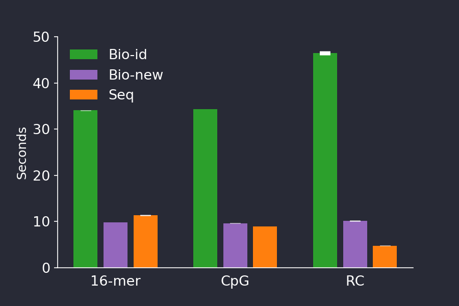

On the performance and design of BioSequences compared to the Seq language

Introduction
In October 2019, a paper was published in Proceedings of the ACM on Programming Languages, introducing a new language for bioinformatics called Seq.
In it, the authors rightly recognise that the field of bioinformatics is in need of a high-performance, yet expressive and productive language. They present Seq, a domain specific compiled language, with the user friendliness of Python, the performance of C, and bioinformatics-specific data types and optimisations. As Julians, we consider their goal to be noble and well worth pursuit. However, they also presented a series of benchmarking results in which they claim the performance of Seq code is far greater than equivalent code written in other languages, including C++ and Julia.
Of course, benchmarking between languages is a tricky thing. Different languages present different syntax, tools and idioms to the programmer, such that what is efficient and natural in one language may be inefficient and clumsy in another. When benchmarking different languages, therefore, it is important to write code that is idiomatic in each language before comparing the code in terms of performance, readability or ease-of-writing. Disagreements about benchmarks between languages often come down to disagreements of whether the code compared are equivalent - if they aren’t, comparisons may be meaningless.
For example, in the majority of the benchmarks between Seq and Julia in the Seq paper, the DNA sequences of Seq are represented by a dedicated sequence type, whereas the sequences in Julia are represented by strings. As the Seq type is crafted specifically for efficient DNA processing, and Julia’s strings are crafted for efficient generic text processing, it is no surprise that Seq is much faster in these benchmarks. Therefore, these particular benchmarks are obviously misleading, and we will not discuss them further here.
The Seq authors, to their credit, realize this and include comparison between Seq and Julia code that uses BioSequences, a package of the BioJulia organization. This package contains custom, efficient types for exactly the type of work they are benchmarking, and so here, the code is equivalent and the comparison reasonable. Even when comparing against BioSequences, the Seq authors find that Seq offers a large speed advantage. As a core developer and long-time user of BioJulia, respectively, we were puzzled by these results. BioJulia is highly optimised. Could Seq really be that much faster? Perhaps we could learn something from Seq?
Recreating the benchmarks
The first thing to do was to see if the results in the paper could be replicated. The Seq authors have made a real effort to allow easy replication of their results, as they have released a virtual machine with all necessary code and software to run their benchmarks out of the box. Only their BioJulia code was missing, which they promptly provided upon request. So we spun up their VM, and recreated their benchmarks. For details on the benchmarking procedure, see the last section of this post.
We note that the provided version of Seq provides wrong answers to the benchmarks on several counts. First, kmers containing ambiguous nucleotides are not skipped during iteration, leading to simpler and faster (but by convention, wrong) code. Second, the middle base is not complemented during reverse-complementation of odd-length sequences. Third, the reverse-complement of ambiguous nucleotides are wrong, as e.g. K is complemented to N rather than the correct answer (M). Fourth, we can make little sense of what the result returned by their CpG benchmarking code actually means. However, these small blemishes could easily be fixed by the Seq authors with little or no performance penalty, so they are not of great importance here.
The results of our recreation are seen in the plot below. We were happy to see we could recreate their performance difference, seeing nearly the same performance difference they found.

Figure 1. Running time of BioJulia (blue) versus Seq (red). We could recreate the authors findings and found Seq to be much faster than BioJulia for the three provided benchmarks. The barplot shows the mean +/- stddev time of 5 consecutive runs.Improving the benchmarked code
As long-time developers and users of BioJulia, we feel qualified to judge whether or not the Julia code used for the benchmarks is idiomatic or not, and whether or not BioJulia was being correctly used. Non-idiomatic Julia is the most common source of complaints when new Julia users benchmark Julia code and find the performance disappointing. This often happens because new users code in a way that carries little penalty in languages like R and Python, but which is difficult for Julia’s JIT compiler to optimise. So, a natural starting point was to check their Julia code for inefficiencies.
However, the Seq authors' Julia benchmarks were well implemented. Only the code for the CpG benchmark could be improved by fixing an error which resulted in incorrect answers, and by computing the result in a single pass of the input sequence. The two other benchmarks only needed minor tweaking to be idiomatic. These minor changes did not improve the timings of BioJulia markedly (Figure 2).

Figure 2. Improving the Julia code of the Seq paper’s benchmarks (green series), did not change the results very much. The barplot shows the mean +/- stddev time of 5 consecutive runs.Explaining the difference in performance
It seems that Seq really is much faster than BioJulia, at least for the benchmarked tasks, and we wanted to know why. So we profiled their BioJulia code to see what BioJulia was taking its sweet time doing. The results for the three benchmarks are shown below in Figure 3.

Figure 3. Barplots showing the fraction of time BioJulia benchmarking code was spending doing various sub-tasks, as determined by the built-in Julia Profiler tool.Surprisingly, Figure 3 reveals that only a small fraction of the time is spent doing what the benchmark nominally measures. For example, the RC benchmark presumably should benchmark reverse-complementation (RC’ing) of sequences, but BioJulia spends less than 10% of the time actually RC’ing. Likewise, checking symmetric kmers and kmer iteration in the 16-mer benchmark is relatively insignificant time-wise. We implemented Seq’s algorithm for RC’ing kmers as described in their paper, but found no difference in performance to BioJulia’s approach, even when benchmarking only the time spent RC’ing.
In fact, Figure 3 shows that for all benchmarks, most of the time is spent building instances of the BioSequence type that BioSequences.jl uses to represent long DNA, RNA and Amino Acid sequences. To find the source of the performance difference between Seq and BioSequences, then, it is necessary to take a small detour into the internals of BioSequences and Seq.
How to represent DNA sequences in software
DNA consists of four nucleotides called A, C, G and T. In some contexts, a nucleotide may instead be one of 16 IUPAC defined symbols. Hence, one nucleotide may be represented in either two bits or four bits. In BioSequences, DNA is stored in a compact format, where nucleotides are encoded to 2 or 4-bit encodings in an integer array. This representation comes with a few advantages:
-
The encoding and decoding step implicitly validates that the input data is meaningful DNA data instead of some random string. Therefore, when given a BioSequence, the user can be confident that the underlying data actually represents valid DNA.
-
Encoding saves 4x or 2x on RAM. Speed is important in bioinformatics precisely because of our large datasets, and this also puts a premium on RAM, making these savings worthwhile.
-
The encoded representation of DNA makes biological operations easier and more efficient. Complementation of a 2-bit DNA sequence, for example, consists only of inverting the encoded bits. Converting between DNA and RNA includes only changing the metadata.
The encoding/decoding also comes with a disadvantage, as it takes more time than just accessing raw bytes. This tradeoff is reminiscent of the pros and cons of a boolean vector versus a bit-vector. As the benchmarks here consists of very simple, fast operations on many small sequences that are read in as text, encoding time dominates.
In contrast, Seq represents DNA sequences as a byte array with the underlying data simply being the bytes of the input string. Constructing this type is obviously much faster than a BioSequence since it can wrap a string directly, but the RAM consumption is 2 or 4 times higher. Remarkably, Seq appears to do no input validation at all, as we confirmed by re-running the benchmarks with corrupted data. BioSequences immediately crashed with an informative error message, whereas Seq happily produced the wrong answer with no warnings.
So it appears the primary reason BioJulia code is slower than Seq code in these three benchmarks is that BioSequences.jl is doing important work for you that Seq is not doing. As scientists, we hope you value tools that spend the time and effort to validate inputs given to it rather than fail silently.
Implementing Seq-like types in Julia
BioSequences may be more memory efficient and safer to use, we still verified the finding of the Seq authors: Seq really is much faster than BioSequences. That surprised us. Was Seq so fast because of amazing software engineering in the language itself, or simply because so much time is lost in BioSequence’s encoding and decoding? We decided to mimic Seq in Julia by implementing DNA sequences and kmer types in Julia with the same data representation Seq uses. Our module, SeqJL turned out to be simple to write, taking less than 100 lines of code. We note that BioSequences could easily have been written this way, and intentionally isn’t.
Figure 4 shows the performance of our SeqJL code (Figure 4, red), where it is significantly faster than Seq, except in the RC benchmark (Figure 4, orange). We found that even further speed improvements could be found by buffering input and output using the BufferedStreams.jl package, but we did not use that in the benchmarks.

Figure 4. Timing a Julia implementation of the data types in Seq (red) resulted in timings which beat those achieved by the Seq code (orange). The barplot shows the mean +/- stddev time of 5 consecutive runs.Learning from Seq
Being challenged often teaches valuable lessons, and the challenge Seq presented to BioJulia is no exception. We were surprised to see a bioinformatics workload where the encoding step of BioSequences proved to be a bottleneck, as we have always believed it to be very fast. We did not expect our simple SeqJL code to outperform BioSequences by such a large factor in these benchmarks.
In most realistic workloads, sequences are subject to more intense processing, which makes the speed of encoding and IO operations less important in comparison. In addition we note that BioJulia provides optimal buffered, state machine generated parsers for many file formats like FASTA and FASTQ, but they were not explored in this work as no benchmark involved them. BioJulia also offers ReadDatastores.jl, which implements indexed disk-backed collections of sequences, stored in the BioSequences encodings. These data-stores mean commonly used sequence datasets like sequencing reads stored in FASTQ files need to be encoded only once, and then the data-store can be reused for a great performance benefit. Nonetheless, the impressive speed of Seq over BioSequences in these benchmarks made us reconsider the need for much faster string/sequence conversion and printing. As a result of this challenge, we have subjected BioSequences to a performance review, optimising a dozen code sections that was causing slowdowns. To benefit from these improvements, users should install BioSequences version 2.X from the BioJuliaRegistry.
We were happy to discover that these changes made a big difference. With the updates, BioSequences rivals Seq in speed while keeping its advantages of a lower memory footprint and doing data validation.

Figure 5. The newest version of BioSequences (purple) comes with performance improvements in encoding, decoding and IO, making it 3-4 times faster than BioSequences v 1.1.0 (green) for these benchmarks, and rivalling Seq (orange). The barplot shows the mean +/- stddev time of 5 consecutive runs.Our take away impressions
Jakob
I wholeheartedly agree with Seq’s goal of bringing a performant language to the masses, so to speak. I also applaud Seq’s authors for their efforts in providing reproducible results by sharing their code and environment, and for their efforts to compare Seq to efficient, proper Julia code. Ultimately, the speed difference between BioSequences and Seq comes down to a design decision in the implementation of the sequence type. I happen to think BioSequences made the right call by encoding the sequences, and Seq made the wrong one.
More broadly I think Seq brings little of value to bioinformatics. Our simple SeqJL implementation shows that Julia can achieve what Seq aims to do with even higher performance and, I would argue, even more elegant, reusable and concise code. In contrast, Seq comes with serious drawbacks. Beside DNA sequence processing, a typical bioinformatics workflow may include reading CSV files, feature extraction, doing statistical tests, plotting data and more. Being a domain specific language, Seq has zero chance of having packages for all these tasks available. In contrast, because BioSequences is simply a package in pure Julia, a user of BioSequences have all the tools of the broader Julia ecosystem available.
More realistically, Seq could survive by providing interoperation with other languages. But madness lies that way. In the bad old days, in a few hours of work, a bioinformatician would use awk to edit text files, pass them through Perl one-liners, run it through Python data processing before graphing using ggplot, all these languages duct-taped together using Bash. Workflows of that kind were inefficient, brittle, and required the programmer to learn a handful of different domain specific languages. Surely that path, the path that Seq shows us, must lie behind us.
Ben
I can only echo and agree with Jakob in applauding Seq’s authors efforts in trying to bring a performant programming language to life, and also applaud their efforts in providing reproducible results.
That said, before playing with these benchmarks it’s fair to say I was fairly skeptical of the idea that what bioinformatics really needs is a domain specific language. When I consider critical problems the field faces, my mind goes to problems such as sometimes undocumented, sometimes poorly understood assumptions about biological systems hardcoded into tools (e.g. assembly pipelines that assume levels of ploidy or genome characteristics). I think of experiments that start with a single reference genome, and run pipelines of heuristic after heuristic, each with its own slew of parameters and biases.
In other words the greatest gains are to be made by improving how we do things, not how fast we do them. Everyone wants speed, that’s why so many Big Data frameworks exist. Indeed the Seq developer’s intention of having a language that is Pythonic in user friendliness, and speed approaching C, is also one of the main reasons Julia exists today. After Julia 1.0 was released, as a core developer of BioJulia, I considered the argument as to whether or not Julia is performant to be settled. It is.
Now the question of whether Julia is fast enough for bioinformatics is settled. I think the current goal of BioJulia is to provide clear, flexible, easy to use frameworks for doing bioinformatics analyses in a robust/reproducible, transparent manner, using clear concepts.
After this review I think I would echo the same same conclusions as Jakob: In brief, the results in the paper can be explained largely due to our design choices in BioSequences.jl, which we maintain were the right calls. The exercise has been valuable, as it has resulted in several pull requests that improve on the performance of the string conversions and sequence encoding BioSequences.jl does; whilst we think the computational effort is justified, we also want it to be faster if it can be. Without Seq’s benchmarks to prompt us to examine this more closely, those those improvements might not have been made for a long time, if at all.
Benchmarking procedure
Benchmarking environment
We ran the code in the Vagrant virtual machine provided by the authors. In the virtual machine, all software needed to reproduce the benchmarks was there, except the Seq authors' BioJulia code, which was provided upon request. The code was run on a 2018 MacBook pro using Julia v 1.0.3 and BioSequences v1.1.0. We could not determine the version of Seq used in the VM.
Benchmarking method
Due to a small virtual disk size in the VM, the whole dataset could not be downloaded, so we generated input data instead by taking the provided small test dataset HG00123_small.txt, and concatenating it to itself 16 times for a total of 2^24 lines, 1.3 GiB. To benchmark, we ran each script 5 times consecutively. For Seq, we used the idiomatic Seq code “seq-id”, and did not include compilation time. For Julia, we included JIT compilation (which we estimated to be ~2 seconds for BioJulia benchmarks, and somewhat less for SeqJL benchmarks), but not package precompilation time. Note that unlike the Seq authors, we ran Julia with default optimization level and boundschecks enabled, as these are the most common settings to run Julia in.
Jakob Nybo Nissen
BioJulia Developer
I am a bioinformatician doing my PhD in metagenomic method development at Technical University of Denmark.